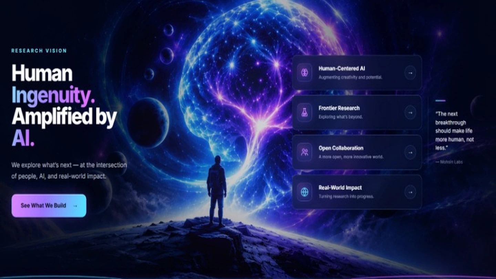
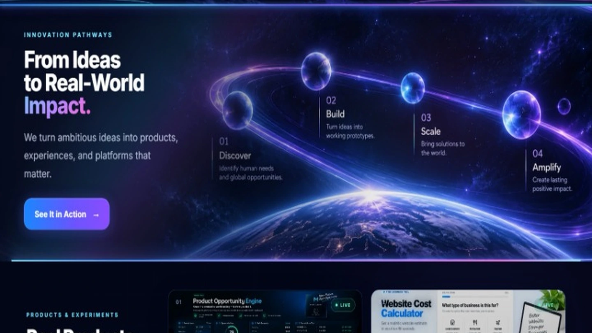
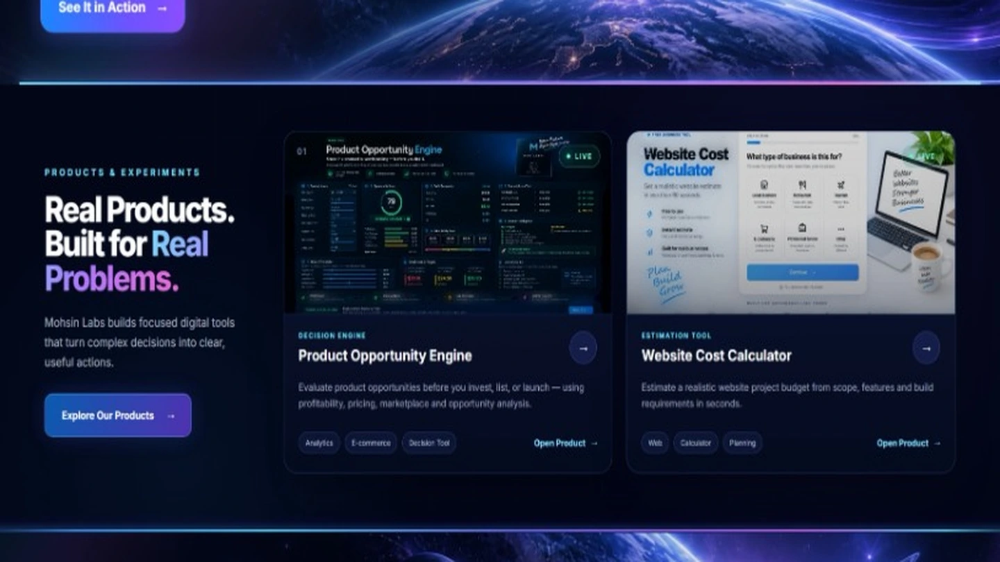

01
Mohsin Labs OS
A deployed private company operating system with research, CRM, product and workflow modules. An isolated public demo shows its interface using fictional data.
Mohsin Labs is my independent product venture. I started it to connect software, design, AI-assisted workflows and practical business needs—building tools people can actually use, rather than stopping at ideas.
Product venture · Independent builds · Live products · Future concepts are not customer-ready claims

Mohsin Labs — existing project preview from the Mohsin Builds portfolio.
I enjoy building websites, but I also want to understand the decisions behind them: what problem exists, who experiences it, and whether software can make the work clearer, faster or easier. Mohsin Labs gives that exploration a long-term home.
Good ideas are easy to collect. Turning the right ones into useful products takes focus.
Without a clear direction, experiments become disconnected demonstrations. I wanted a place where research, design, engineering and iteration could support one purpose.
Mohsin Labs brings together a private operating system and two publicly usable decision tools. These are distinct products, not features of a fictional all-in-one demo.
A deployed private company operating system with research, CRM, product and workflow modules. An isolated public demo shows its interface using fictional data.
Evaluate profitability, pricing room and risk using manually entered product assumptions. A decision aid—not a source of live marketplace demand data.
Guide a business through project requirements and an indicative website budget range before an exact quotation or discovery conversation.
The same product-thinking approach guides different kinds of experiments. This is the working philosophy behind Mohsin Labs, not a claim that every idea has already been commercially validated.
Learn which decisions, tasks or frustrations deserve attention.
Research existing approaches and test whether the problem is worth addressing.
Turn the idea into a working experience with focused functionality.
Use real testing and feedback to guide further development.
Mohsin Labs has its own public home, while Mohsin Builds is my professional portfolio and client-facing presence. The two are connected intentionally, without pretending they are the same product.



My role spans concept, UX, implementation, deployment and iteration. The public website and lightweight decision tools use standard browser technologies; the operating system has a separate full-stack architecture.
The Mohsin Labs public website and its decision tools use HTML, CSS, JavaScript, responsive interfaces and GitHub Pages.
Mohsin Labs OS brings together a Next.js frontend, TypeScript services, Supabase data and authentication, and Vercel/Render deployments. Its public demo is isolated from private workspace data.
Mohsin Labs is more than a concept page: the public website, the two browser tools and the operating system demo are available to explore. Each represents an approach to a different, practical problem.
I don't claim customer growth, income, conversion rates or hours saved without evidence. Right now, the important outcome is a growing body of shipped work and a clearer product-building process.
A strong product portfolio is not about the number of dashboards. It's about the decisions each product helps someone make.
Future development will follow the needs that emerge from real research and user feedback. Mohsin Labs OS could become a public SaaS offering, but customer onboarding, tenant isolation, billing and operational reliability must be tested before paid availability.
Visit Mohsin Labs, try the live tools, or connect with me to discuss a practical digital product.